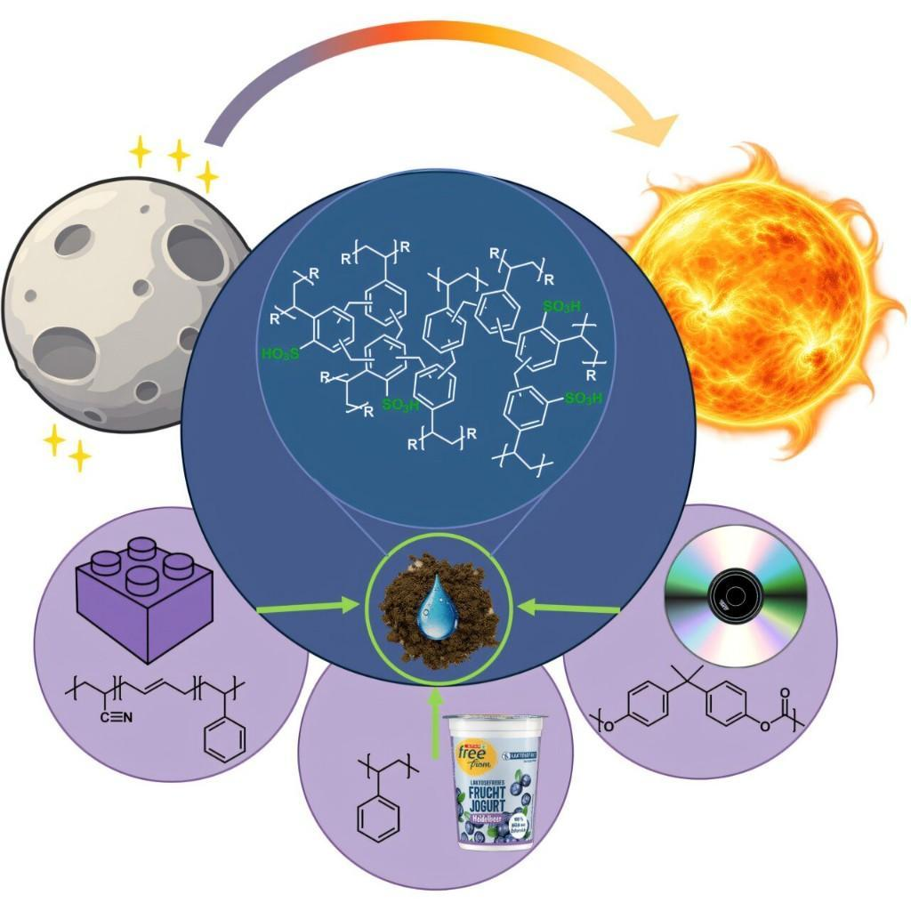
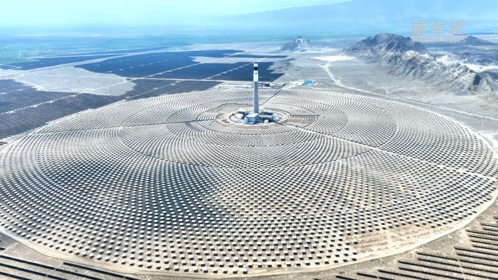

小小新闻播报
看图片，说新闻，分享新发现
分享日：2026年10月22日 星期四
上海上午：多云转阴
08时17℃ · 11时22℃
上海上午：多云转阴
08时17℃ · 11时22℃
10月22日 · 新闻分享
每条新闻单独一页。先选一条，再用"下一条"继续；看图讲述、邀请同学回答，三条合计约6—9分钟。
1. 新大桥上的火车试跑
打开这条新闻 · 约2—3分钟

2. 废塑料变成小海绵
打开这条新闻 · 约2—3分钟

3. 220米高的太阳能大塔
打开这条新闻 · 约2—3分钟